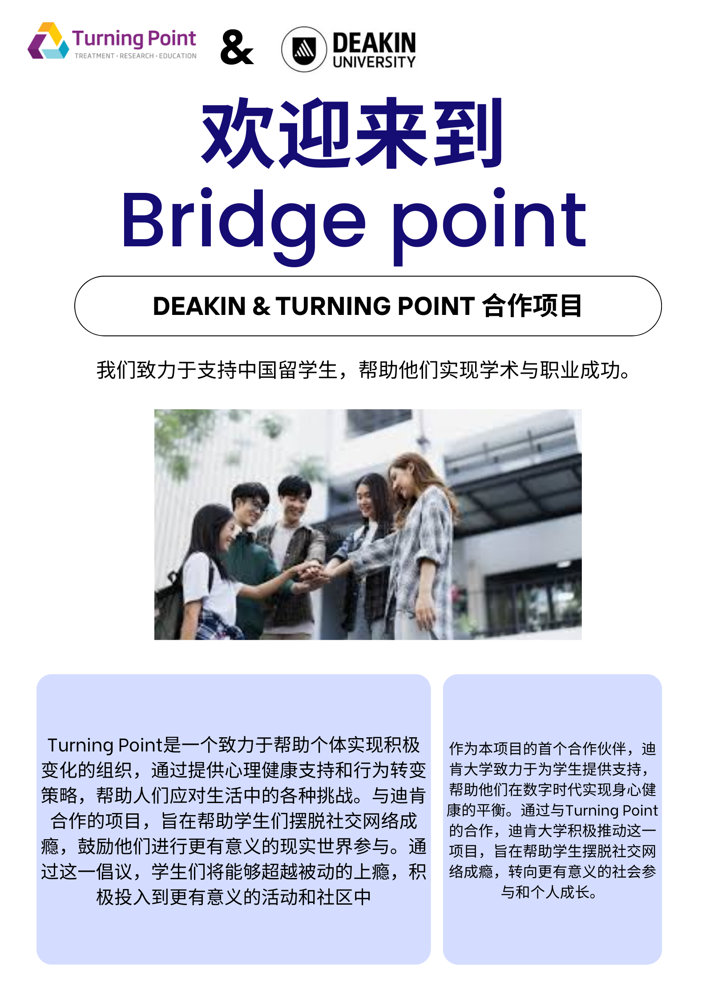

Support for Deakin alumni to share their experiences and network.
Helping you build and showcase valuable experiences.
Providing emotional and mental support for students and alumni.
A platform for exchanging ideas and experiences within the community.
